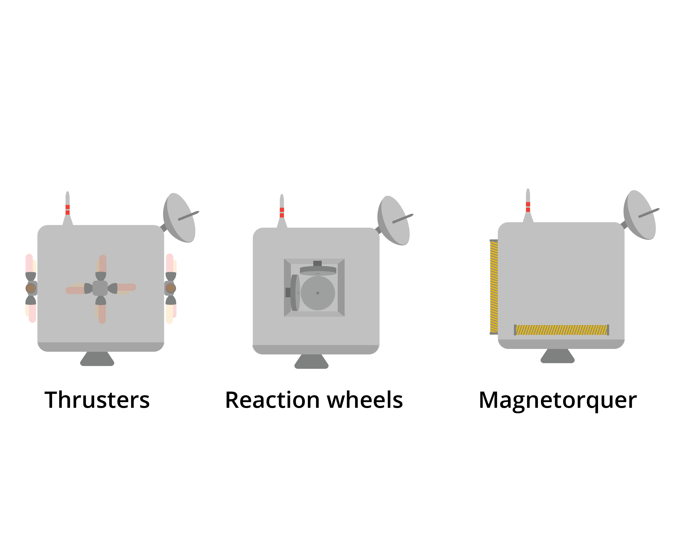

The Kontinua Foundation
I created the illustrations for a series of STEM textbooks called the Kontinua Sequence. I developed a printer-friendly style that had a specific look while still being easy to understand and recreate. I used Python scripting and Illustrator's built in scripting functionality to organize files and to make isometric illustrations easier. I spent time learning each concept so I could find the best way to teach it visually.
